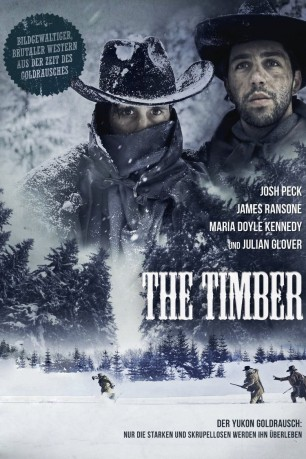

#463 The Timber
 
 IMDB-Wertung: 5.0 / 10
IMDB-Wertung: 5.0 / 10  Metascore: 0
Metascore: 0 
1898. Während des Yukon Gold Rausches, werden die Brüder Wyatt (James Ransone) und Samuel (Josh Peck) mit der rauen Umgebung, wildgewordenen Männern und dem Tod konfrontiert. Ihr gewalttätiger und befehlsgebender Vater hat das Yukon Gebiet in seine persönliche Hölle verwandelt, wo Gier, Verrat und Blutvergießen an der Tagesordnung ist.
Jahr: 2015
Dauer: 81 Minuten
FSK: 16
Land: USA Studio: Well Go USA EntertainmentTonspuren: DTS - ,
Untertitel:
Auflösung: 1080p (1920x800) Größe: 5765 MB
Genre: Action, Abenteuer, Drama, Western
Regisseur: Anthony O'Brien
Drehbuch: Steve Allrich, Anthony O'Brien, Colin Ossiander
Soundtrack: Tim Borquez
Darsteller:
Datei: X:\HD-Western-2000-2015\Timber, The (2015, FSK16, 1920x800).mkv seit 25.02.2015
Festplatte: HD Eastern+Western
 Es gibt insgesamt 61 Filme in der Gruppe 'HD-Western-2000-2015'
Es gibt insgesamt 61 Filme in der Gruppe 'HD-Western-2000-2015'